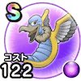

ムーンキメラ
10章3話～13章EP推奨レベル上級職71以上のクエスト※地域限定こころ最大コスト+4じゅもんダメージ+3%【夜間】じゅもんダメージ+4%【夜間】戦闘終了時にMPを5回復する封印耐性+5% / 7.5点
くわしい特徴
【ランク特殊効果】 こころ最大コスト+4じゅもんダメージ+3%【夜間】じゅもんダメージ+4%【夜間】戦闘終了時にMPを5回復する封印耐性+5%

10章3話～13章EP推奨レベル上級職71以上のクエスト※地域限定こころ最大コスト+4じゅもんダメージ+3%【夜間】じゅもんダメージ+4%【夜間】戦闘終了時にMPを5回復する封印耐性+5% / 7.5点
【ランク特殊効果】 こころ最大コスト+4じゅもんダメージ+3%【夜間】じゅもんダメージ+4%【夜間】戦闘終了時にMPを5回復する封印耐性+5%